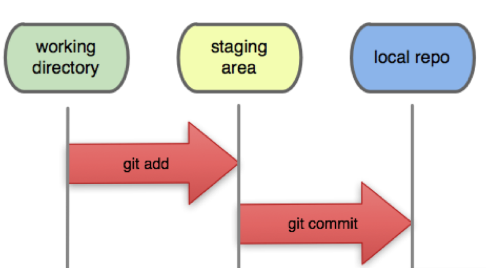
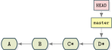
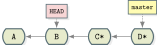
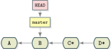
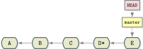
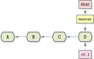
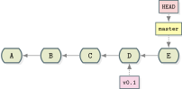

Git Training
Authors
The Problem
- Codebase is undergoing frequent changes. It is easy for something to go wrong.
- How do you review the codebase history?
- How do you handle changes done by different people working on the same files?
- How do you make sure every server and developer has the same version across?
Possible Solutions
- Copy and paste? ✖
- FTP server? ✖
- Version control system? ✔
Version Control Systems
- Allows you to keep a history of every change within a project.
- Allows multiple people to collaborate on the same project, without evil stuff happening.
- Allows multiple people to make sure that when they are working with a specific version they have the same code all around.
Different Systems of Version Control
- Local version control systems
- Centralized version control systems
- Distributed version control systems
Local Version Control Systems
Simple database that keeps all changes to files under version control.
Example system: RCS
RCS keeps patch sets and recreates what any file looked like at any point in time by adding up all the patches.

Centralized Version Control Systems
- Allows collaboration between different people.
- A single server that contains all the versioned files.
- A number of clients that check out files from that central place.
- Main disadvantage is that CVCS have a single point of failure.
- Example systems:
SVN,CVS.

Distributed Version Control Systems
Users fully mirror repository.
A failed server can be restored from any client's mirror.
Example systems: git, mercurial.

Installing git
To install git on Linux:
apt-get install git
yum install git
pacman -S git
To install git on Mac:
brew install git
http://git-scm.com/download
To install git on Windows:
http://git-scm.com/download
git First-Time Configuration
To setup user name:
$ git config --global user.name "Absi Gittawi"
To setup email:
$ git config --global user.email absi.gittawi@example.com
To list all configurations:
$ git config --list
Starting with git
Repository: in simple words, a project's folder. A repository contains all of the project files, each file's revision history, user configuration, and git data.
To initialize a repo (short for repository) in an existing folder:
$ git init
To initialize a repo in a new folder:
$ git init <project-folder>
The Three States
Files Life Cycle

Files Status
$ git status
On branch master
nothing to commit, working directory clean
- Clean working directory (no tracked and modified files)
- The branch you’re on
- If you diverged from the same branch on the server
Undoing Things
$ git checkout <commit>
$ git checkout B-SHA
Undoing Things
$ git reset <commit>
$ git reset --soft B-SHA
Undoing Things
$ git revert <commit>
E is a new commit that undoes the changes made in commit D*
Tags
Tags are pointers to commits. They don't move with time.
Typical usage is to mark release points and versions.
To create a new tag:
$ git tag <tag-name>
To list available tags:
$ git tag
Tags
Tags
Stash
Problem: you are in the middle of something, and Absi, the QA team head, comes rushing. "There is an urgent bug that needs to be resolved now!".
You need to stop what you're doing and make a change on the production version.
You try to checkout to the latest release tag, but stupid git is yelling:
error: Your local changes to the following files would be overwritten
by checkout:
index.html
Please, commit your changes or stash them before you can switch
branches.
Aborting
Stash
Stashing takes the dirty state of your working directory and saves it on a stack of unfinished changes that you can reapply at any time.
Result is an empty working directory that you can restore when you are ready.
Stash
To stash your changes:
$ git stash
$ git stash save
$ git stash save <message>
To restore stashed changes:
$ git stash pop
$ git stash apply
To see available stashes:
$ git stash list
References
- http://www.slideshare.net/leeky/gittalk?qid=b2fc5360-a943-467e-9e66-c3481173cdb2&v=qf1&b=&from_search=6